In the game
Captured in the editor from builds in progress.
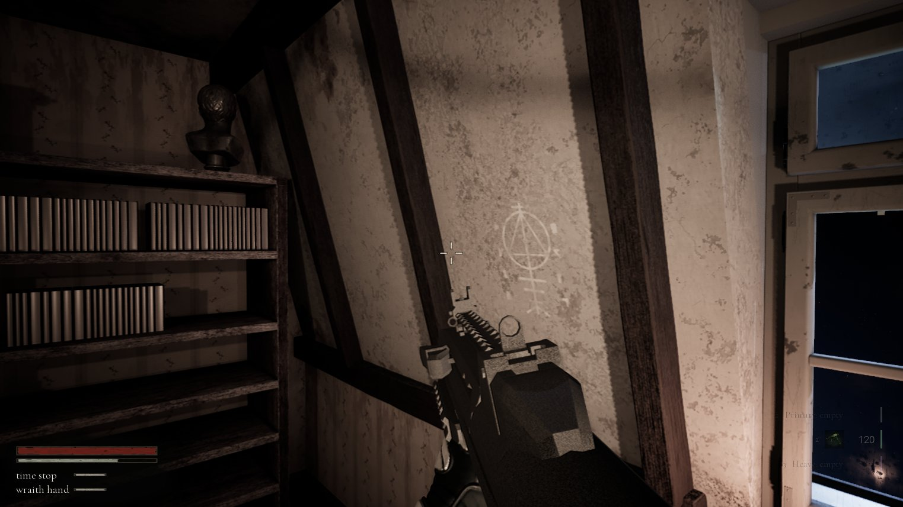
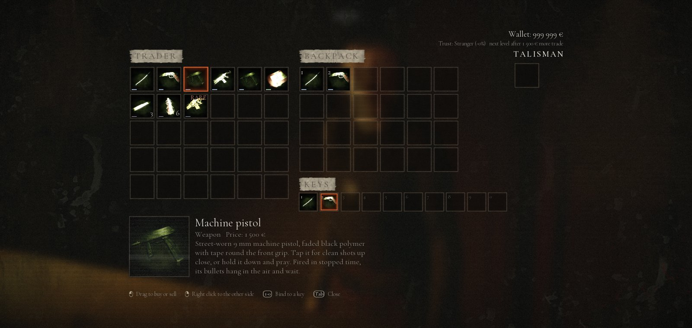
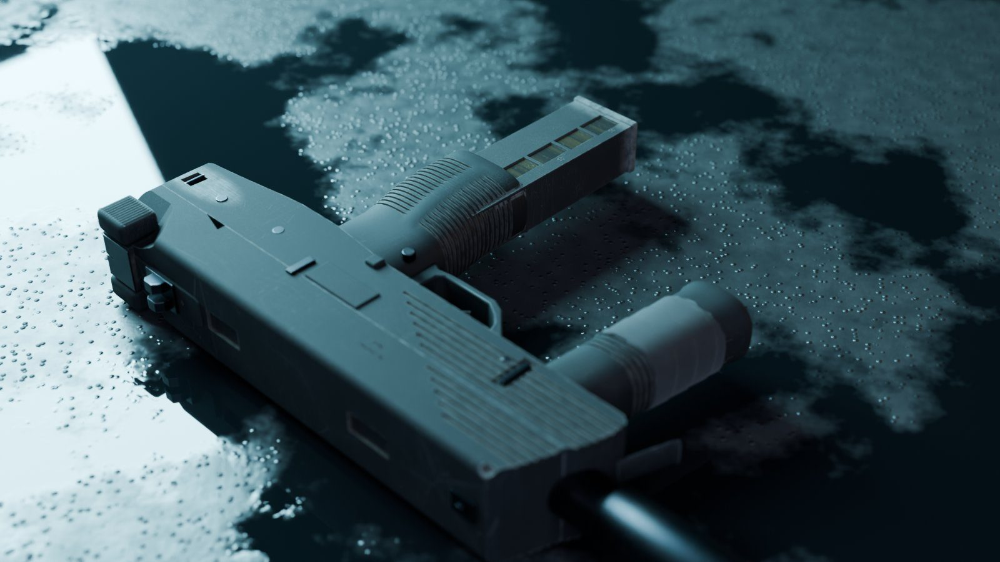
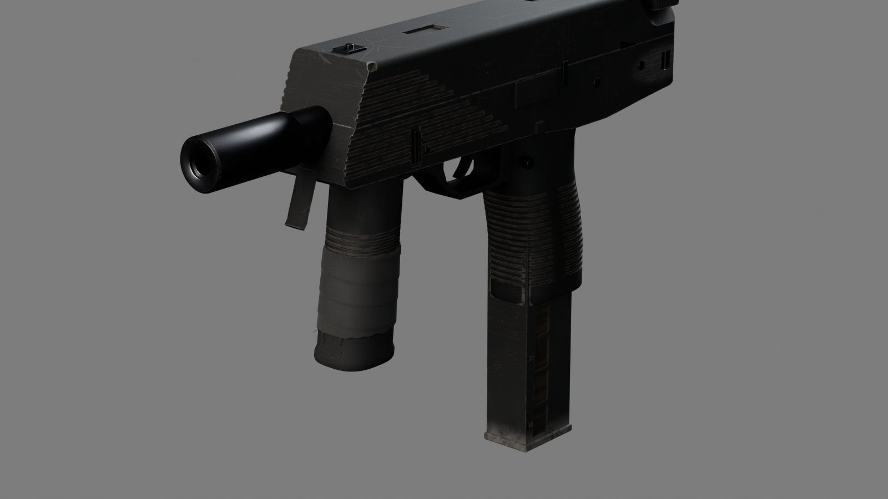
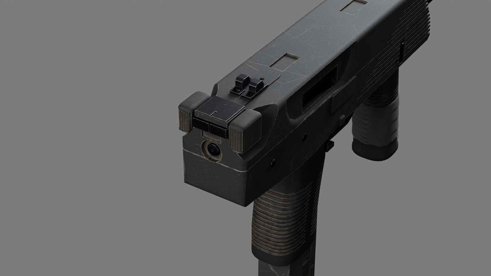
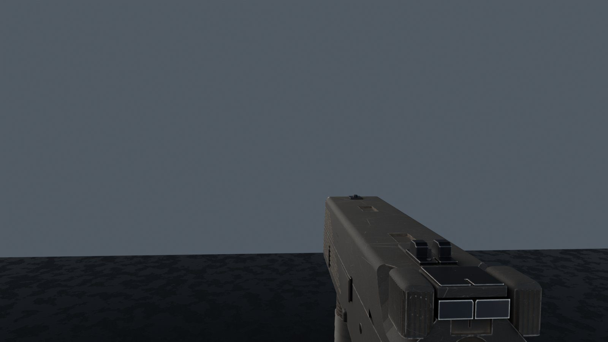
Slow, heavy fights in the dark
A wave survival mode on a night street at the edge of a forest: four waves of creatures, a boss, short breaks to refill ammo and heal, and checkpoints on death.
Noir and gothic in tone, with scarce ammo, guns that jam when worn, and abilities that turn a bad fight around.
Gameplay systems
Weapons, aiming, melee and damage are written in C++. Player abilities and all health and damage run on Unreal's Gameplay Ability System. Simpler level logic stays in Blueprints.
Time stop
GAS ability · bullet braking · post-processPressing E freezes incoming enemy bullets mid-air. Each bullet rolls its own stop distance, then brakes on an exponential ease-out in real time while the world is frozen, so the player can step out of the line of fire.
Wraith's hand
GAS ability · physics · camera modifierA huge, faint spectral hand grabs an enemy up to 20 m away, holds it in front of the player following their aim with spring lag, and throws it into walls or other enemies for impact damage and a knockdown.
Damage pipeline
GameplayEffect execution · attribute sets · tagsEvery hit is a tagged hit record (bullet, blade, impact, holy, silver...) resolved by one execution: attacker and target modifiers, crits, a flat damage threshold for armour and poise damage that can stun.
Weapons and katana
C++ weapons · procedural viewmodel · recoilPistol and a TMP machine pistol (two-stage trigger: half pull for single shots, full pull for auto) with magazines, ammo types, wear and jams, recoil and procedural viewmodel sway. A katana with wide off-screen cuts and a "path cut" dash attack. Dropped magazines and shell casings are physical.
Enemy base and AI
AIpzEnemyBase · data assets · StateTreeOne shared enemy class configured per creature by a data asset. Enemies have ambient routines (patrols, activity spots), react to noise and glimpses (Ambient, Alert, Combat), break poise into stuns and get shoved by physics hit reactions.
Wave survival
wave manager · checkpoints · atmosphereData-driven waves with shuffled enemy mixes, spawn groups away from the player, refill points between waves, a boss phase and checkpoints. Street lamps die and the fog thickens as the waves go on.
Inventory and loot
grid inventory · stash · trader · loot menuA slot-based backpack and stash with stacking, swap and merge, hotbar keys and armour and talisman slots. Bodies and containers open a loot list; a trader screen reuses the same grid. A corpse manager caps bodies and removes searched ones first.
Dialogue
data-driven dialogue · head-look animationBranching conversations defined in data assets, with a close-up camera on the speaker's face and a procedural head and eye look-at so characters follow the player while they talk.
Tooling and tests
console commands · automated test runsEvery system ships with console commands for tuning and automated runs: a time stop test captures screenshots of each braking stage, and spawn, loot and inventory commands make bugs reproducible.
How the code fits together
The player and every enemy carry an Ability System Component. All damage, from bullets to a thrown enemy hitting a wall, goes through one combat core.
Excerpts from the source
Short, lightly trimmed excerpts.
Resolving a hit
Combat/IpzDamageExecution.cppOne GameplayEffect execution turns every hit into health and poise damage. The hit's tags count on both sides, so a perk like "+25% blade damage" or a creature's "weak to silver" is just a tagged attribute modifier.
Armour is a flat damage threshold. A share of every hit always gets through, so heavy enemies are tough but never immune.
float Damage = BaseDamage * Outgoing * Incoming;
const bool bCrit = CritChance > 0.0f && FMath::FRand() < CritChance;
if (bCrit)
{
Damage *= CritMultiplier;
}
// armour: flat threshold, reduced by the ammo
// and the attacker's armour piercing
const float EffectiveThreshold =
FMath::Max(0.0f, Threshold - DTReduction) * DTMultiplier;
if (Damage > 0.0f && EffectiveThreshold > 0.0f)
{
// a minimum share always gets through (default 20%)
Damage = FMath::Max(Damage - EffectiveThreshold,
Damage * FMath::Clamp(MinShare, 0.0f, 1.0f));
}
const float Poise = BasePoise * PoiseMultiplier;
if (Damage > 0.0f)
{
Out.AddOutputModifier(FGameplayModifierEvaluatedData(
UIpzHealthSet::GetPendingDamageAttribute(),
EGameplayModOp::Additive, Damage));
}Braking bullets in a time stop
Abilities/GA_TimeStop.cppEach bullet gets a random stop distance, biased toward the far end so stops look scattered rather than lined up. It then slides to a halt on a normalised exponential curve.
The braking distance per unit of speed is the integral of that curve, so a fast bullet starts braking earlier and still stops exactly on its mark.
float UGA_TimeStop::GetFreezeDistance(const AActor* Projectile)
{
if (const float* Rolled = FreezeDistances.Find(Projectile))
{
return *Rolled;
}
const float Max = FMath::Max(FreezeDistanceMax, FreezeDistanceMin);
const float Distance = FreezeDistanceMin + (Max - FreezeDistanceMin)
* FMath::Pow(FMath::FRand(), FMath::Max(FreezeDistanceBias, 0.1f));
FreezeDistances.Add(Projectile, Distance);
return Distance;
}
// 0..1 eased progress: fast at first, settling smoothly at rest
float UGA_TimeStop::BrakeCurve(float Alpha) const
{
const float S = FMath::Max(BrakeSharpness, 1.0f);
return (1.0f - FMath::Pow(2.0f, -S * FMath::Clamp(Alpha, 0.0f, 1.0f)))
/ (1.0f - FMath::Pow(2.0f, -S));
}
// distance covered while braking, per unit of speed
const float BrakeDistancePerSpeed =
Duration * (1.0f - FMath::Pow(2.0f, -S)) / (S * UE_LN2);Building a wave
Waves/IpzWaveManager.cppA wave lists how many of each creature it sends. They go into a bag that is shuffled with Fisher-Yates, so creature types mix through the wave instead of arriving in blocks.
Spawn points are filtered by the wave's spawn groups, kept away from the player and never reused twice in a row.
void AIpzWaveManager::BuildSpawnBag()
{
SpawnBag.Reset();
const FIpzWaveDefinition* Definition = GetWaveDefinition();
if (!Definition || !HasCounts(*Definition))
{
return; // no counts: weighted random picks instead
}
for (const FIpzWaveEnemyMix& Entry : Definition->EnemyMix)
{
for (int32 i = 0; Entry.EnemyClass && i < Entry.Count; ++i)
{
SpawnBag.Add(Entry.EnemyClass);
}
}
// shuffled, so the kinds mix through the wave
for (int32 i = SpawnBag.Num() - 1; i > 0; --i)
{
SpawnBag.Swap(i, FMath::RandRange(0, i));
}
}Keeping bodies without the cost
Enemies/IpzCorpseSubsystem.cppBodies stay on the ground so fights leave a mark, but a world subsystem caps them. When the cap is reached it removes bodies the player has already searched first, and only then the oldest one with loot still on it.
while (Cap > 0 && Corpses.Num() > Cap)
{
// searched (or empty) bodies go first, oldest first
int32 Index = Corpses.IndexOfByPredicate(
[](const TWeakObjectPtr<AActor>& Body)
{
const UIpzLootComponent* Loot = Body.IsValid()
? Body->FindComponentByClass<UIpzLootComponent>() : nullptr;
return !Loot || Loot->IsEmpty();
});
Index = Index == INDEX_NONE ? 0 : Index;
AActor* Oldest = Corpses[Index].Get();
Corpses.RemoveAt(Index);
if (AIpzEnemyBase* Enemy = Cast<AIpzEnemyBase>(Oldest))
{
Enemy->RemoveCorpse(); // sinks away, drops its loot container
}
}Places to fight in
The game has gone through several playable spaces: a night street on the edge of a forest, a metro station and its tunnels, a cemetery arena and the hunter's attic flat. Each is lit for a low-key, rainy night.
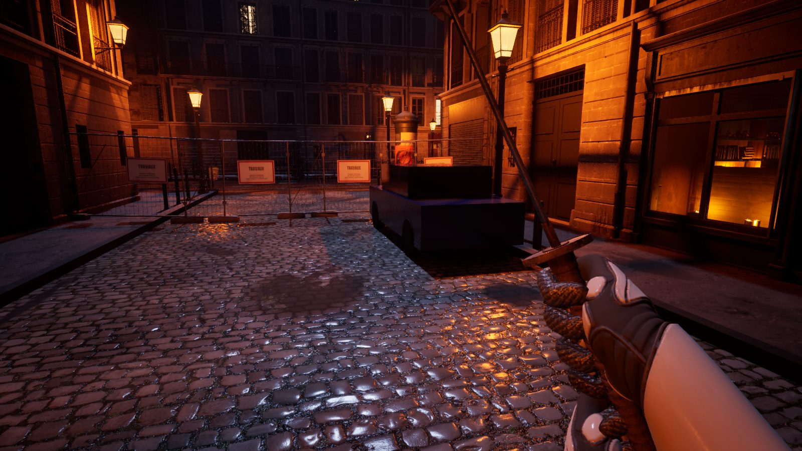
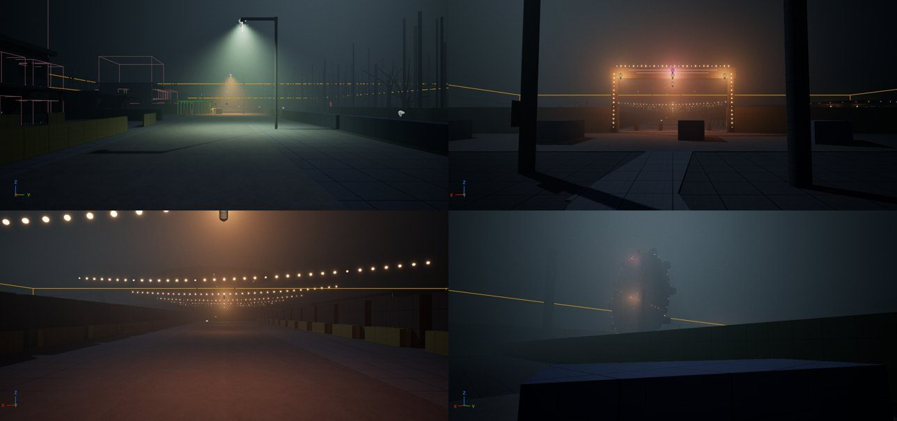
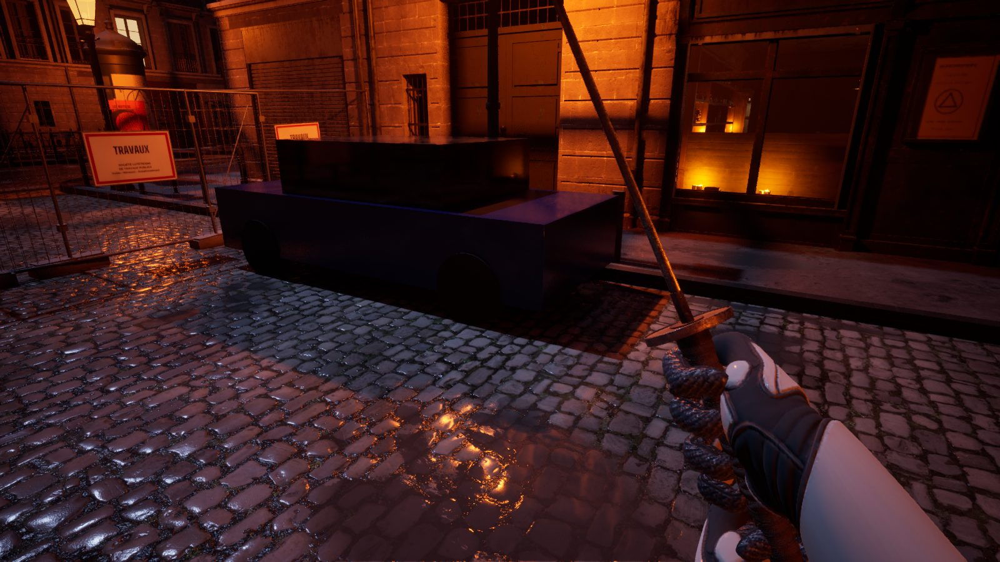
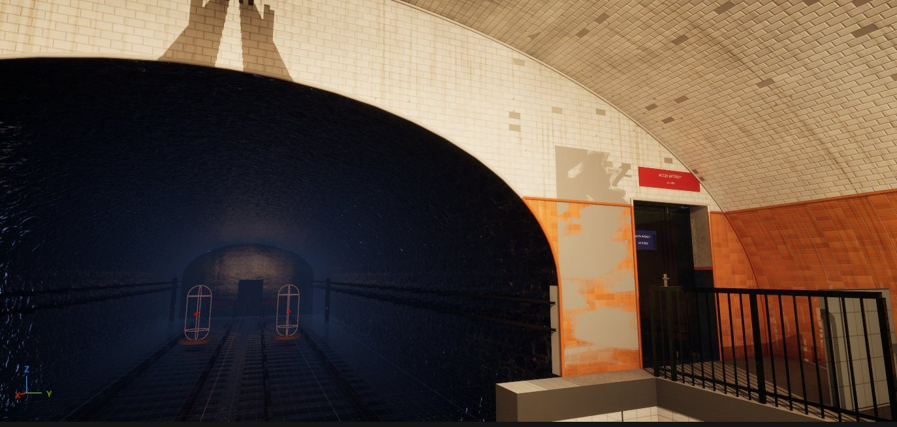
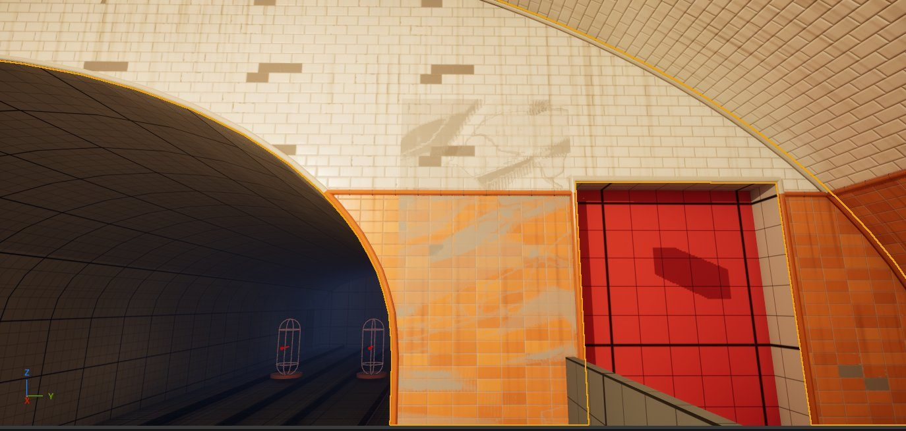
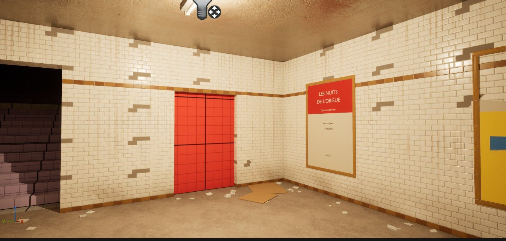
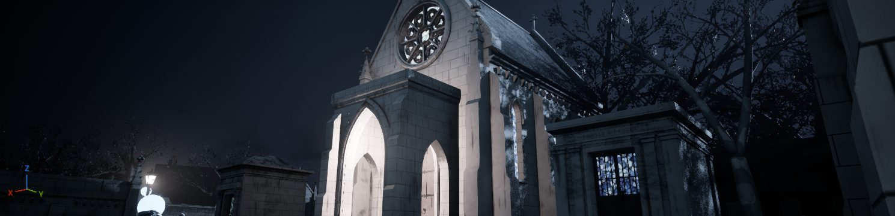
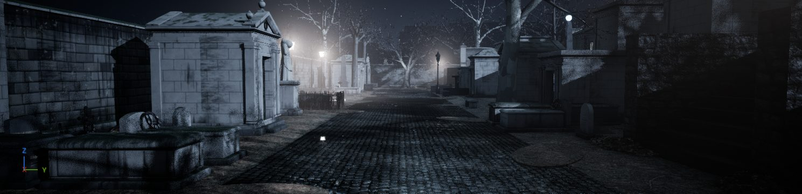
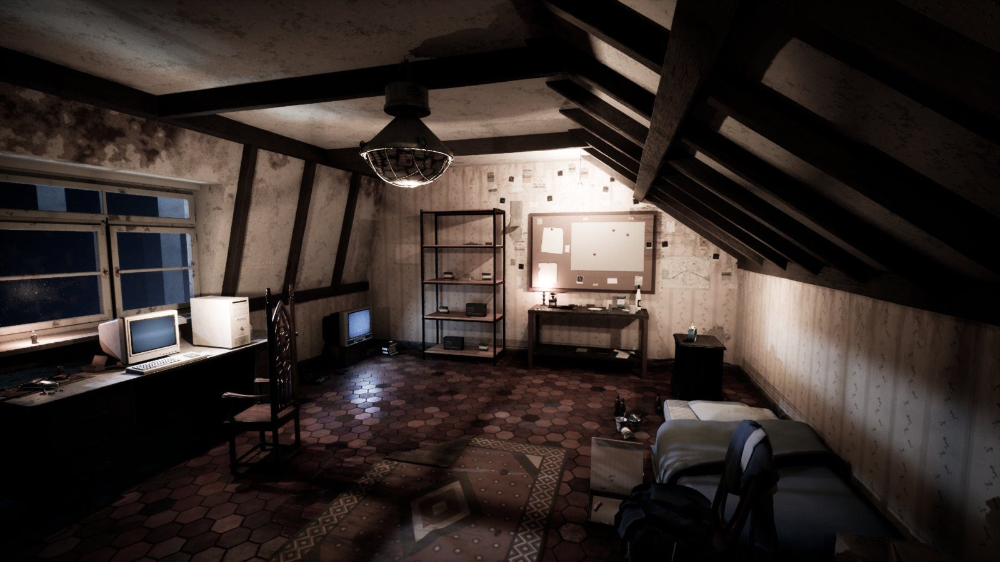
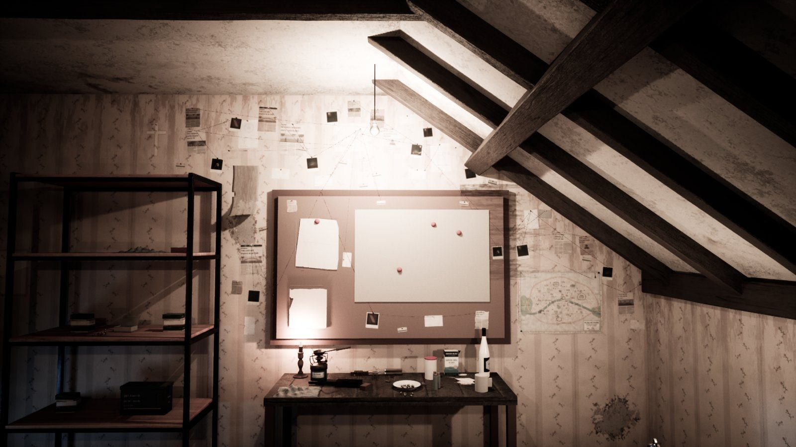
Planning the outskirts
The current level is a Midwest suburb at the edge of a forest. A street of houses is the wave arena, with spawns from the treeline, the backyards and both ends of the road.
Past it, a forest trail leads by a pond, a ranger cabin and a creek to an abandoned carnival.
I lay levels out first in a top-down planner at 1 m per square. It marks spawns, ammo and heal spots, cover, interactable props and the route, so the team agrees on the space before anything is built.
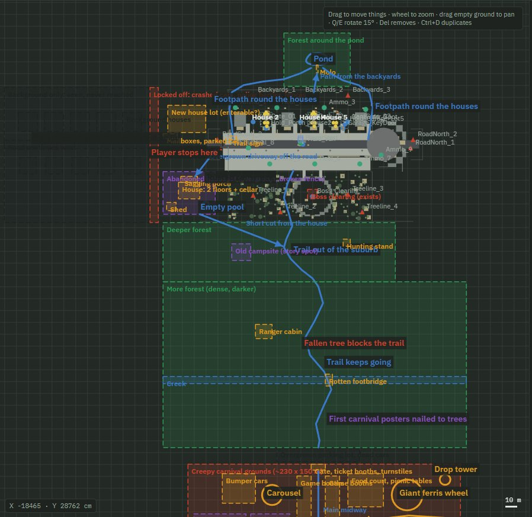